Summary
This experiment investigates leather tanning process. Full factorial of tanning agent concentration, soak time, pH, and fat liquor percentage to maximize softness and color uniformity.
The design varies 4 factors: tannin pct (%), ranging from 3 to 10, soak hrs (hrs), ranging from 4 to 24, ph (pH), ranging from 3 to 5, and fat liquor pct (%), ranging from 3 to 10. The goal is to optimize 2 responses: softness score (pts) (maximize) and color uniformity (pts) (maximize). Fixed conditions held constant across all runs include hide type = cowhide, method = vegetable.
A full factorial design was used to explore all 16 possible combinations of the 4 factors at two levels. This guarantees that every main effect and interaction can be estimated independently, at the cost of a larger experiment (16 runs).
Quadratic response surface models were fitted to capture potential curvature and factor interactions. The RSM contour plots below visualize how pairs of factors jointly affect each response.
Key Findings
For softness score, the most influential factors were fat liquor pct (44.9%), soak hrs (24.5%), tannin pct (18.4%). The best observed value was 8.3 (at tannin pct = 10, soak hrs = 4, ph = 5).
For color uniformity, the most influential factors were soak hrs (54.2%), fat liquor pct (43.1%), tannin pct (1.4%). The best observed value was 7.3 (at tannin pct = 3, soak hrs = 24, ph = 3).
Recommended Next Steps
- Consider whether any fixed factors should be varied in a future study.
Experimental Setup
Factors
| Factor | Low | High | Unit |
|---|
tannin_pct | 3 | 10 | % |
soak_hrs | 4 | 24 | hrs |
ph | 3 | 5 | pH |
fat_liquor_pct | 3 | 10 | % |
Fixed: hide_type = cowhide, method = vegetable
Responses
| Response | Direction | Unit |
|---|
softness_score | ↑ maximize | pts |
color_uniformity | ↑ maximize | pts |
Configuration
{
"metadata": {
"name": "Leather Tanning Process",
"description": "Full factorial of tanning agent concentration, soak time, pH, and fat liquor percentage to maximize softness and color uniformity"
},
"factors": [
{
"name": "tannin_pct",
"levels": [
"3",
"10"
],
"type": "continuous",
"unit": "%"
},
{
"name": "soak_hrs",
"levels": [
"4",
"24"
],
"type": "continuous",
"unit": "hrs"
},
{
"name": "ph",
"levels": [
"3",
"5"
],
"type": "continuous",
"unit": "pH"
},
{
"name": "fat_liquor_pct",
"levels": [
"3",
"10"
],
"type": "continuous",
"unit": "%"
}
],
"fixed_factors": {
"hide_type": "cowhide",
"method": "vegetable"
},
"responses": [
{
"name": "softness_score",
"optimize": "maximize",
"unit": "pts"
},
{
"name": "color_uniformity",
"optimize": "maximize",
"unit": "pts"
}
],
"settings": {
"operation": "full_factorial",
"test_script": "use_cases/180_leather_tanning/sim.sh"
}
}
Experimental Matrix
The Full Factorial Design produces 16 runs. Each row is one experiment with specific factor settings.
| Run | tannin_pct | soak_hrs | ph | fat_liquor_pct |
|---|
| 1 | 3 | 24 | 5 | 10 |
| 2 | 10 | 4 | 3 | 10 |
| 3 | 3 | 24 | 3 | 10 |
| 4 | 3 | 24 | 5 | 3 |
| 5 | 10 | 24 | 5 | 3 |
| 6 | 10 | 4 | 5 | 3 |
| 7 | 10 | 24 | 3 | 3 |
| 8 | 10 | 4 | 3 | 3 |
| 9 | 3 | 4 | 3 | 10 |
| 10 | 3 | 4 | 5 | 3 |
| 11 | 10 | 24 | 3 | 10 |
| 12 | 10 | 24 | 5 | 10 |
| 13 | 3 | 24 | 3 | 3 |
| 14 | 10 | 4 | 5 | 10 |
| 15 | 3 | 4 | 3 | 3 |
| 16 | 3 | 4 | 5 | 10 |
Step-by-Step Workflow
1
Preview the design
$ python doe.py info --config use_cases/180_leather_tanning/config.json
2
Generate the runner script
$ python doe.py generate --config use_cases/180_leather_tanning/config.json \
--output use_cases/180_leather_tanning/results/run.sh --seed 42
3
Execute the experiments
$ bash use_cases/180_leather_tanning/results/run.sh
4
Analyze results
$ python doe.py analyze --config use_cases/180_leather_tanning/config.json
5
Get optimization recommendations
$ python doe.py optimize --config use_cases/180_leather_tanning/config.json
6
Generate the HTML report
$ python doe.py report --config use_cases/180_leather_tanning/config.json \
--output use_cases/180_leather_tanning/results/report.html
Features Exercised
| Feature | Value |
|---|
| Design type | full_factorial |
| Factor types | continuous (all 4) |
| Arg style | double-dash |
| Responses | 2 (softness_score ↑, color_uniformity ↑) |
| Total runs | 16 |
Analysis Results
Generated from actual experiment runs using the DOE Helper Tool.
Response: softness_score
Top factors: fat_liquor_pct (44.9%), soak_hrs (24.5%), tannin_pct (18.4%).
Pareto Chart
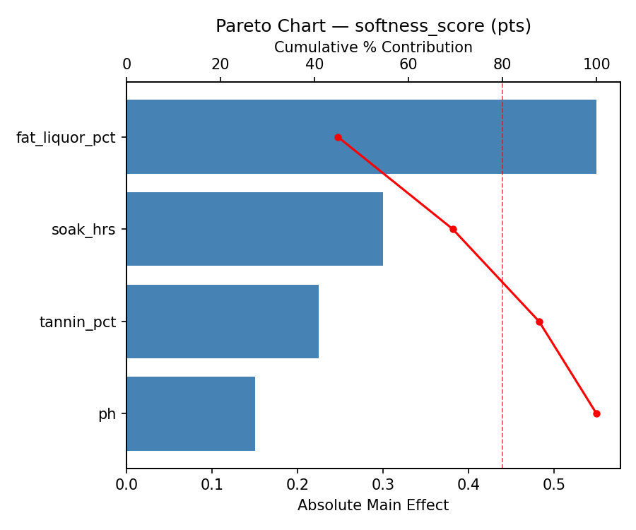
Main Effects Plot
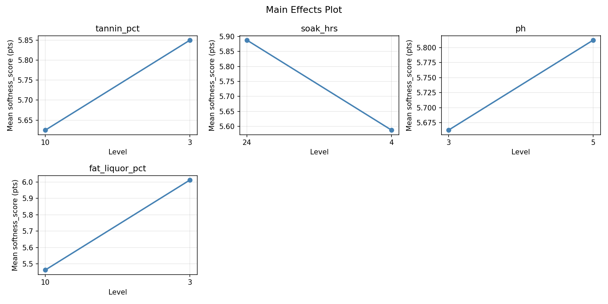
Response: color_uniformity
Top factors: soak_hrs (54.2%), fat_liquor_pct (43.1%), tannin_pct (1.4%).
Pareto Chart
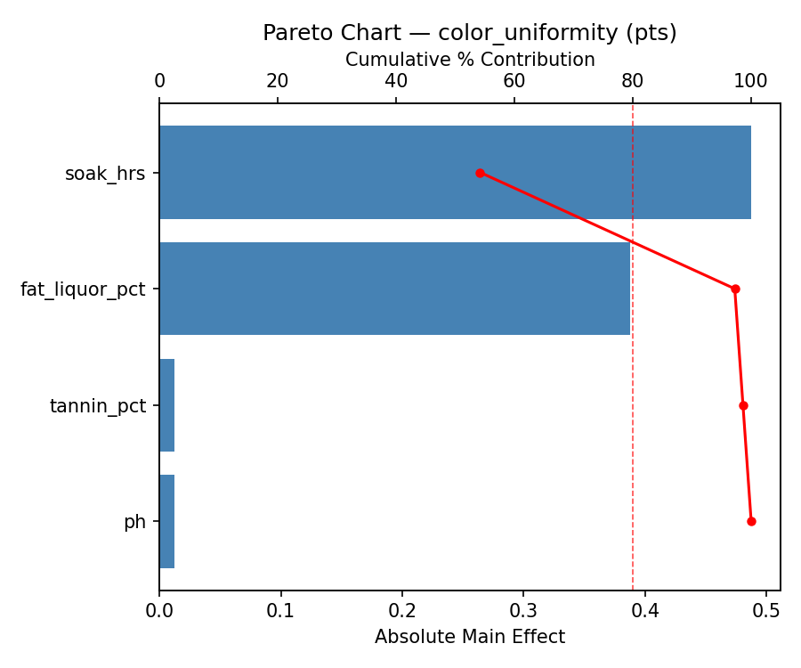
Main Effects Plot
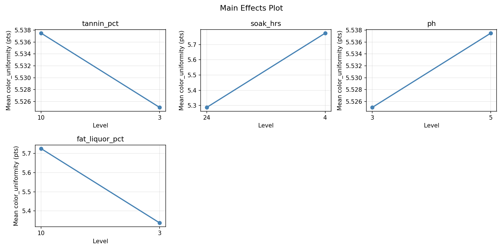
Response Surface Plots
3D surfaces fitted with quadratic RSM. Red dots are observed data points.
color uniformity ph vs fat liquor pct
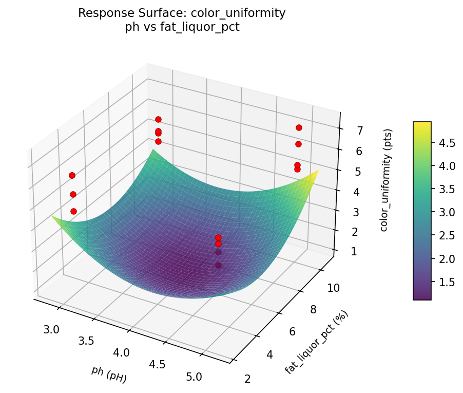
color uniformity soak hrs vs fat liquor pct

color uniformity soak hrs vs ph
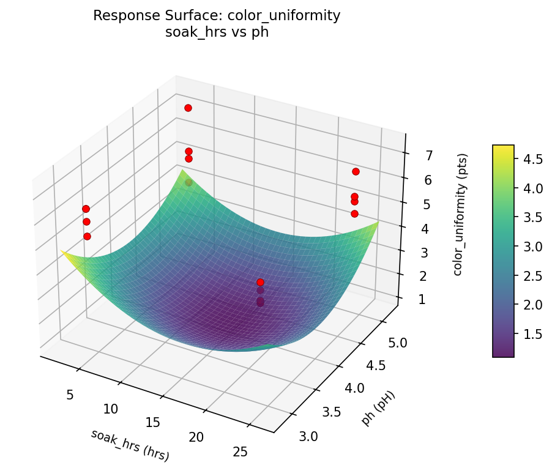
color uniformity tannin pct vs fat liquor pct
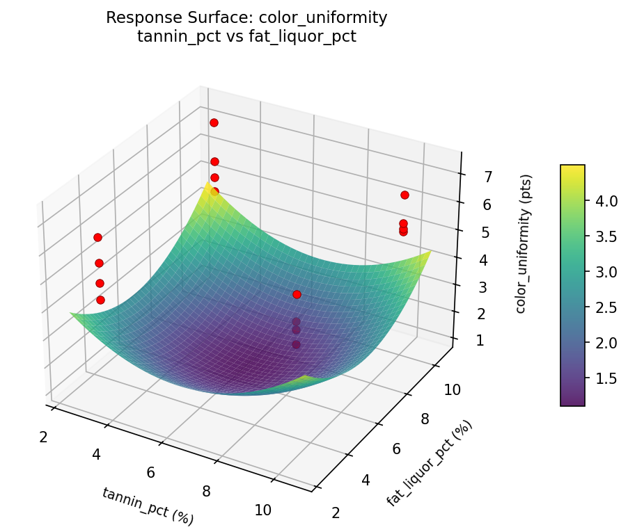
color uniformity tannin pct vs ph
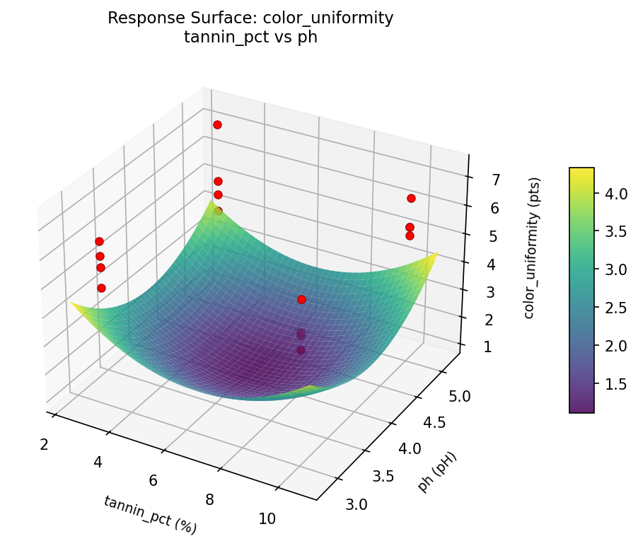
color uniformity tannin pct vs soak hrs
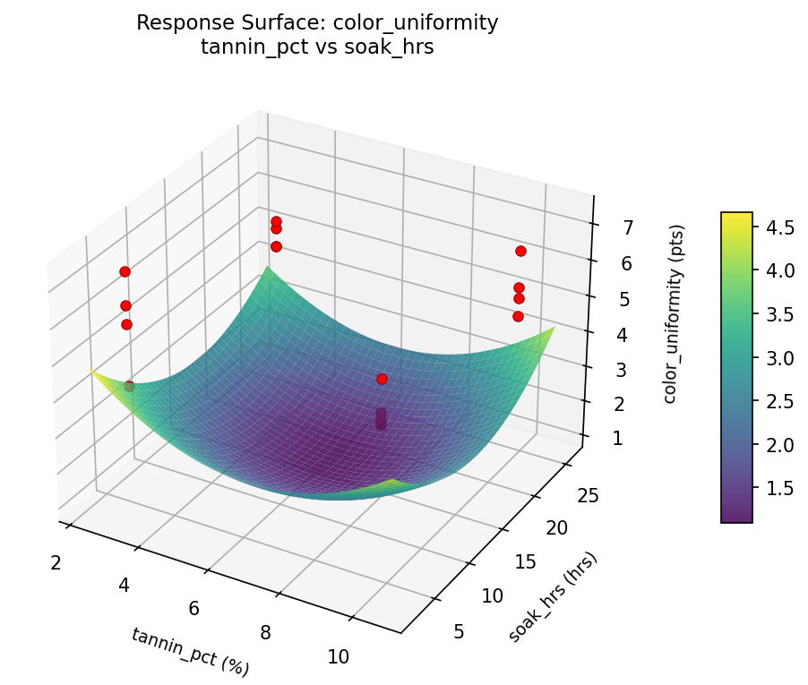
softness score ph vs fat liquor pct
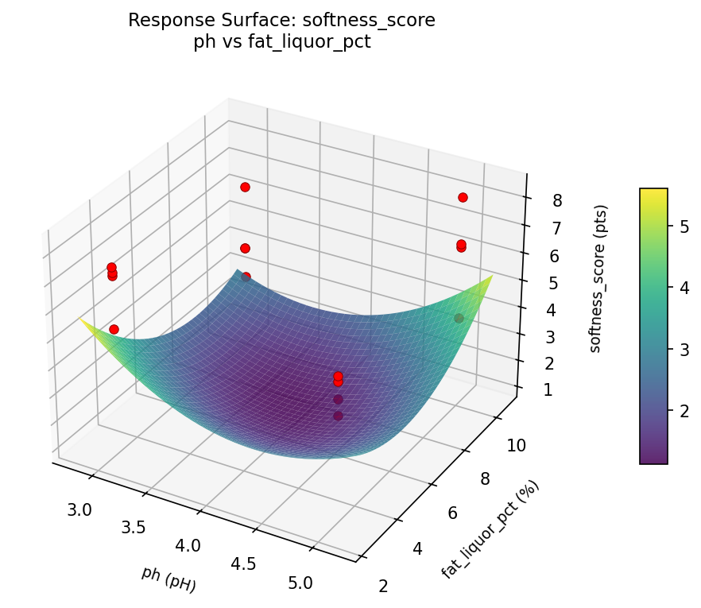
softness score soak hrs vs fat liquor pct
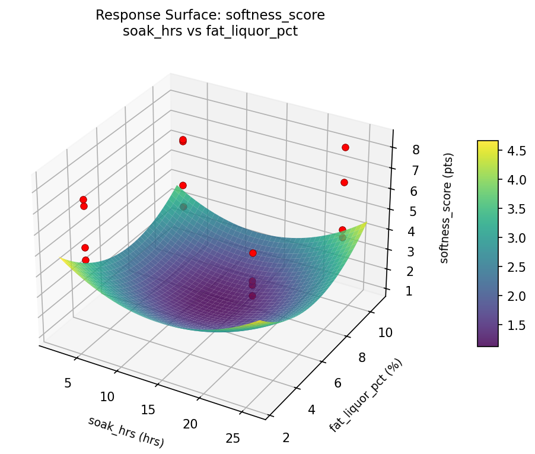
softness score soak hrs vs ph
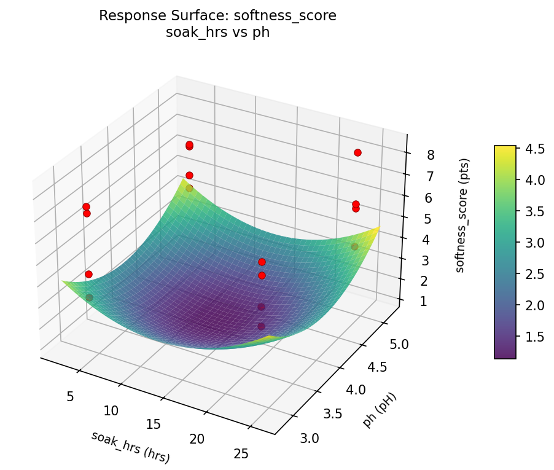
softness score tannin pct vs fat liquor pct
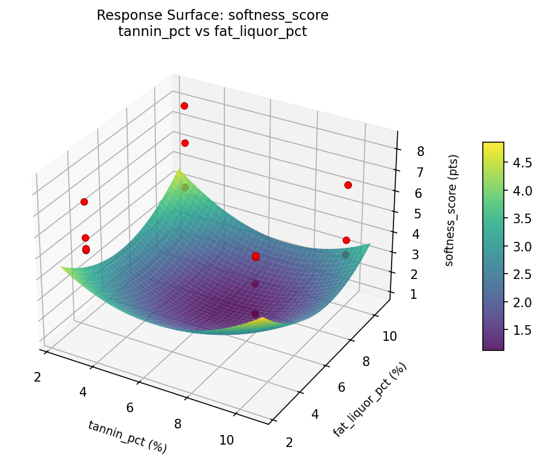
softness score tannin pct vs ph
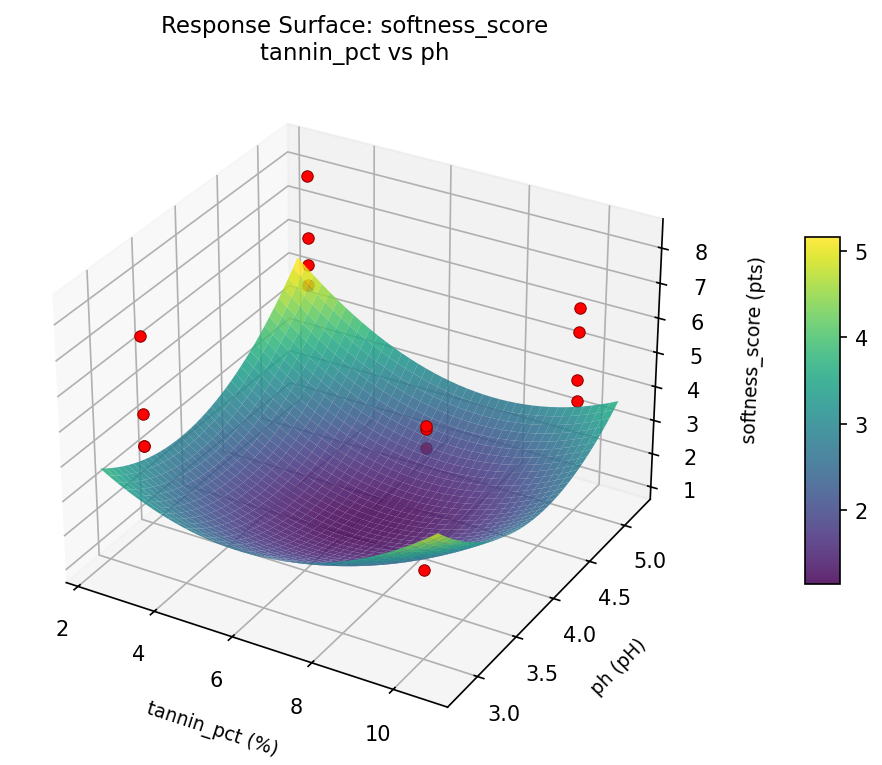
softness score tannin pct vs soak hrs
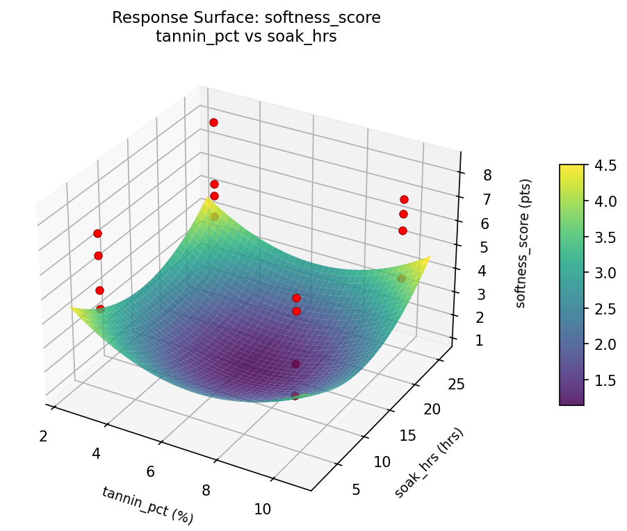
Full Analysis Output
RSM surface: rsm_softness_score_tannin_pct_vs_soak_hrs.png
RSM surface: rsm_softness_score_tannin_pct_vs_ph.png
RSM surface: rsm_softness_score_tannin_pct_vs_fat_liquor_pct.png
RSM surface: rsm_softness_score_soak_hrs_vs_ph.png
RSM surface: rsm_softness_score_soak_hrs_vs_fat_liquor_pct.png
RSM surface: rsm_softness_score_ph_vs_fat_liquor_pct.png
RSM surface: rsm_color_uniformity_tannin_pct_vs_soak_hrs.png
RSM surface: rsm_color_uniformity_tannin_pct_vs_ph.png
RSM surface: rsm_color_uniformity_tannin_pct_vs_fat_liquor_pct.png
RSM surface: rsm_color_uniformity_soak_hrs_vs_ph.png
RSM surface: rsm_color_uniformity_soak_hrs_vs_fat_liquor_pct.png
RSM surface: rsm_color_uniformity_ph_vs_fat_liquor_pct.png
=== Main Effects: softness_score ===
Factor Effect Std Error % Contribution
--------------------------------------------------------------
fat_liquor_pct 0.5500 0.3628 44.9%
soak_hrs -0.3000 0.3628 24.5%
tannin_pct 0.2250 0.3628 18.4%
ph 0.1500 0.3628 12.2%
=== Interaction Effects: softness_score ===
Factor A Factor B Interaction % Contribution
------------------------------------------------------------------------
ph fat_liquor_pct -1.5750 42.9%
tannin_pct ph 0.9500 25.9%
tannin_pct fat_liquor_pct -0.5500 15.0%
soak_hrs fat_liquor_pct 0.3250 8.8%
tannin_pct soak_hrs 0.2500 6.8%
soak_hrs ph 0.0250 0.7%
=== Summary Statistics: softness_score ===
tannin_pct:
Level N Mean Std Min Max
------------------------------------------------------------
10 8 5.6250 1.5471 3.2000 7.2000
3 8 5.8500 1.4462 4.3000 8.3000
soak_hrs:
Level N Mean Std Min Max
------------------------------------------------------------
24 8 5.8875 1.4653 3.9000 8.3000
4 8 5.5875 1.5217 3.2000 7.4000
ph:
Level N Mean Std Min Max
------------------------------------------------------------
3 8 5.6625 1.6177 3.2000 7.4000
5 8 5.8125 1.3726 3.9000 8.3000
fat_liquor_pct:
Level N Mean Std Min Max
------------------------------------------------------------
10 8 5.4625 1.7720 3.2000 8.3000
3 8 6.0125 1.0960 4.5000 7.4000
=== Main Effects: color_uniformity ===
Factor Effect Std Error % Contribution
--------------------------------------------------------------
soak_hrs 0.4875 0.1997 54.2%
fat_liquor_pct -0.3875 0.1997 43.1%
tannin_pct -0.0125 0.1997 1.4%
ph 0.0125 0.1997 1.4%
=== Interaction Effects: color_uniformity ===
Factor A Factor B Interaction % Contribution
------------------------------------------------------------------------
ph fat_liquor_pct -0.8375 38.1%
soak_hrs ph -0.4625 21.0%
tannin_pct soak_hrs 0.3625 16.5%
tannin_pct ph -0.2625 11.9%
tannin_pct fat_liquor_pct -0.2125 9.7%
soak_hrs fat_liquor_pct -0.0625 2.8%
=== Summary Statistics: color_uniformity ===
tannin_pct:
Level N Mean Std Min Max
------------------------------------------------------------
10 8 5.5375 0.6163 4.7000 6.5000
3 8 5.5250 0.9939 4.2000 7.3000
soak_hrs:
Level N Mean Std Min Max
------------------------------------------------------------
24 8 5.2875 0.5842 4.7000 6.5000
4 8 5.7750 0.9438 4.2000 7.3000
ph:
Level N Mean Std Min Max
------------------------------------------------------------
3 8 5.5250 0.6585 4.7000 6.4000
5 8 5.5375 0.9665 4.2000 7.3000
fat_liquor_pct:
Level N Mean Std Min Max
------------------------------------------------------------
10 8 5.7250 0.8155 4.8000 7.3000
3 8 5.3375 0.7855 4.2000 6.4000
Pareto chart (softness_score): use_cases/180_leather_tanning/results/analysis/pareto_softness_score.png
Pareto chart (color_uniformity): use_cases/180_leather_tanning/results/analysis/pareto_color_uniformity.png
Main effects (softness_score): use_cases/180_leather_tanning/results/analysis/main_effects_softness_score.png
Main effects (color_uniformity): use_cases/180_leather_tanning/results/analysis/main_effects_color_uniformity.png
Optimization Recommendations
=== Optimization: softness_score ===
Direction: maximize
Best observed run: #3
tannin_pct = 10
soak_hrs = 4
ph = 5
fat_liquor_pct = 10
Value: 8.3
RSM Model (linear, R² = 0.0445, Adj R² = -0.3030):
Coefficients:
intercept +5.7375
tannin_pct -0.2625
soak_hrs +0.0750
ph +0.0250
fat_liquor_pct +0.1125
RSM Model (quadratic, R² = 0.8266, Adj R² = -1.6003):
Coefficients:
intercept +1.1475
tannin_pct -0.2625
soak_hrs +0.0750
ph +0.0250
fat_liquor_pct +0.1125
tannin_pct*soak_hrs +0.0750
tannin_pct*ph +0.9500
tannin_pct*fat_liquor_pct +0.1375
soak_hrs*ph -0.3625
soak_hrs*fat_liquor_pct -0.1750
ph*fat_liquor_pct +0.6750
tannin_pct^2 +1.1475
soak_hrs^2 +1.1475
ph^2 +1.1475
fat_liquor_pct^2 +1.1475
Curvature analysis:
tannin_pct coef=+1.1475 convex (has a minimum)
soak_hrs coef=+1.1475 convex (has a minimum)
ph coef=+1.1475 convex (has a minimum)
fat_liquor_pct coef=+1.1475 convex (has a minimum)
Notable interactions:
tannin_pct*ph coef=+0.9500 (synergistic)
ph*fat_liquor_pct coef=+0.6750 (synergistic)
soak_hrs*ph coef=-0.3625 (antagonistic)
Predicted optimum (from linear model):
tannin_pct = 3
soak_hrs = 24
ph = 5
fat_liquor_pct = 10
Predicted value: 6.2125
Model quality: Weak fit — consider adding center points or using a different design.
Factor importance:
1. tannin_pct (effect: 0.5, contribution: 55.3%)
2. fat_liquor_pct (effect: -0.2, contribution: 23.7%)
3. soak_hrs (effect: -0.1, contribution: 15.8%)
4. ph (effect: 0.0, contribution: 5.3%)
=== Optimization: color_uniformity ===
Direction: maximize
Best observed run: #12
tannin_pct = 3
soak_hrs = 24
ph = 3
fat_liquor_pct = 10
Value: 7.3
RSM Model (linear, R² = 0.2045, Adj R² = -0.0848):
Coefficients:
intercept +5.5313
tannin_pct +0.1312
soak_hrs +0.0187
ph -0.3188
fat_liquor_pct +0.0562
RSM Model (quadratic, R² = 0.5412, Adj R² = -5.8826):
Coefficients:
intercept +1.1063
tannin_pct +0.1313
soak_hrs +0.0188
ph -0.3188
fat_liquor_pct +0.0562
tannin_pct*soak_hrs -0.0063
tannin_pct*ph +0.2563
tannin_pct*fat_liquor_pct +0.0063
soak_hrs*ph +0.0938
soak_hrs*fat_liquor_pct +0.3438
ph*fat_liquor_pct -0.0937
tannin_pct^2 +1.1063
soak_hrs^2 +1.1063
ph^2 +1.1063
fat_liquor_pct^2 +1.1063
Curvature analysis:
soak_hrs coef=+1.1063 convex (has a minimum)
tannin_pct coef=+1.1063 convex (has a minimum)
ph coef=+1.1063 convex (has a minimum)
fat_liquor_pct coef=+1.1063 convex (has a minimum)
Notable interactions:
soak_hrs*fat_liquor_pct coef=+0.3438 (synergistic)
Predicted optimum (from linear model):
tannin_pct = 10
soak_hrs = 24
ph = 3
fat_liquor_pct = 10
Predicted value: 6.0563
Model quality: Weak fit — consider adding center points or using a different design.
Factor importance:
1. ph (effect: -0.6, contribution: 60.7%)
2. tannin_pct (effect: -0.3, contribution: 25.0%)
3. fat_liquor_pct (effect: -0.1, contribution: 10.7%)
4. soak_hrs (effect: -0.0, contribution: 3.6%)